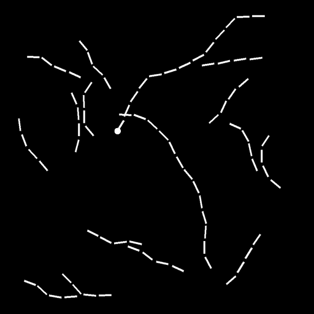
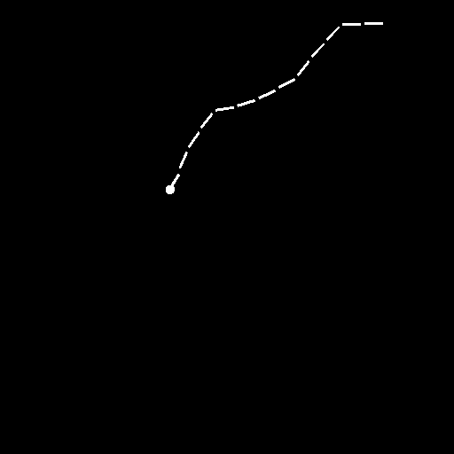
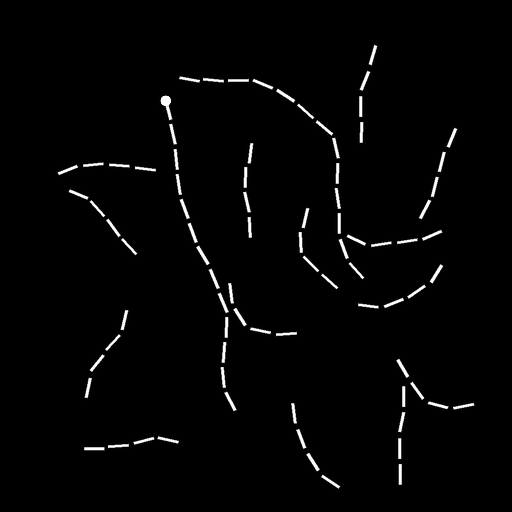
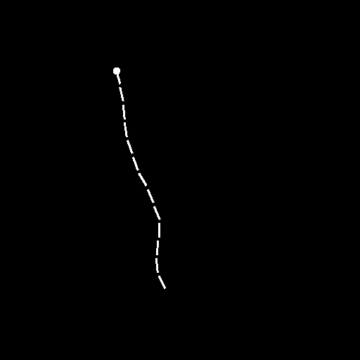
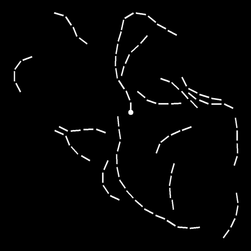
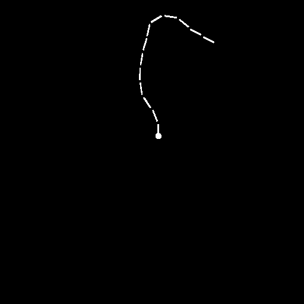
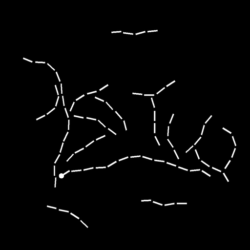
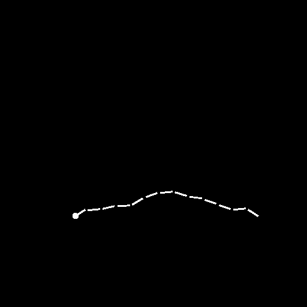

01La tâche
Chaque image contient de nombreux « serpents » : des courbes en pointillés qui serpentent, se frôlent et parfois se croisent. Un seul d'entre eux porte un disque à l'une de ses extrémités. L'objectif est de produire un masque binaire de même taille que l'image, qui vaut 1 sur les pixels de ce serpent (disque compris) et 0 ailleurs : c'est un problème image-vers-image (segmentation).








En haut, l'image d'entrée ; en bas, le masque à prédire.
Pourquoi c'est difficile
Localement, un tiret du bon serpent ressemble exactement à un tiret d'un serpent distracteur. Pour savoir si un pixel appartient à la cible, il faut « remonter » la courbe, de tiret en tiret, jusqu'au disque, parfois à plusieurs centaines de pixels de distance. Les pointillés empêchent de simplement suivre des pixels connexes, et là où deux serpents se touchent ou se croisent, seule la continuité de la direction permet de trancher. Un réseau convolutif peu profond, dont le champ réceptif est petit, ne peut pas trancher : la tâche teste la capacité d'un modèle à propager de l'information à longue distance dans l'image.
02Données
Les données sont un sous-échantillon de Pathfinder-X2 (licence CC BY 4.0), lui-même construit sur le générateur Pathfinder de Linsley et al. (NeurIPS 2018). Le plus simple est d'utiliser pathfinder_data.py, qui ne dépend que de NumPy :
# wget https://raw.githubusercontent.com/rtavenar/defi-pathfinder/main/pathfinder_data.py from pathfinder_data import load_train, load_test, save_submission, dice_score X, Y = load_train() # télécharge au premier appel, dans ./data X_test = load_test() X.shape, Y.shape, X_test.shape # ((5000, 512, 512), (5000, 512, 512), (2000, 512, 512))
| Fichier | Contenu | Lien direct |
|---|---|---|
train_images.npz | clé images : uint8, (5000, 512, 512) | télécharger |
train_masks.npz | clé masks : masques compressés bit à bit (np.packbits), à relire avec load_train() | télécharger |
test_images.npz | clé images : uint8, (2000, 512, 512) ; masques non fournis | télécharger |
En mémoire, le train occupe environ 2,6 Go en uint8. Convertissez en float32 batch par batch, pas tout d'un coup (×4). Aucun masque de validation n'est fourni : découpez vous-même une partie du train.
03Évaluation
Pour chaque image de test i, on compare le masque prédit Pi au masque réel Gi par le coefficient de Dice, puis on fait la moyenne sur les images :
score = moyenne des Dice par image
Le score vaut 1 pour une prédiction parfaite. Une image où prédiction et cible sont toutes deux vides compte pour 1. La fonction dice_score(pred, target) du loader calcule exactement la métrique officielle.
Test public, test privé. Le jeu de test est coupé en deux moitiés tirées au hasard. Le classement en ligne n'utilise que la moitié publique. Le classement final est calculé sur la moitié privée, avec la meilleure soumission (au sens du test public) de chaque équipe. Sur-optimiser le classement public ne paie donc pas.
04Soumettre
- Prédisez un masque (binaire, ou une probabilité seuillée à 0,5) pour les 2 000 images de test, dans l'ordre de
load_test(). - Écrivez le fichier avec
save_submission(pred): il produitsubmission.zip(quelques Mo). - Ouvrez une issue « Soumission » sur le dépôt du défi (compte GitHub requis), indiquez le nom de votre équipe et glissez-déposez
submission.zip. - Un robot évalue la soumission, répond dans l'issue avec votre score sur le test public, puis met à jour le classement ci-dessous.
pred = model_predict(X_test) # (2000, 512, 512), valeurs dans [0, 1] save_submission(pred, "submission.zip", expected_shape=X_test.shape)
05Règles
- Équipes de 1 à 4 personnes. Toujours le même nom d'équipe, quel que soit le membre qui soumet. Indiquer votre nom d'équipe dans le Google Doc de déclaration des équipes.
- 5 soumissions maximum par équipe sur 24 heures glissantes.
- Seules les données fournies ici sont autorisées pour l'entraînement. Utiliser le jeu Pathfinder-X2 complet, ou toute autre source contenant les images de test, entraîne la disqualification.
- Les modèles pré-entraînés sur d'autres données (ImageNet, etc.) sont autorisés ; précisez-le dans la description de la soumission.
- Pas d'annotation manuelle du jeu de test.
- Le code permettant de reproduire la soumission finale doit être rendu avec le rapport à l'enseignant.e en charge de votre groupe.
- Une date de soutenance finale doit être convenue avec l'enseignant.e en charge de votre groupe.
06Classement public
Meilleure soumission de chaque équipe, Dice moyen sur la moitié publique du test. Les lignes en italique sont des baselines fournies par l'équipe enseignante.
| # | Équipe | Score | ||
|---|---|---|---|---|
| Chargement du classement… | ||||
07Ressources
- Notebook de démarrage (format jupytext) : chargement, visualisation, baseline par seuillage, petit U-Net en PyTorch, soumission.
- D. Linsley, J. Kim, V. Veerabadran, C. Windolf, T. Serre. Learning long-range spatial dependencies with horizontal gated recurrent units, NeurIPS 2018. L'article qui introduit Pathfinder.
- Y. Tay et al. Long Range Arena: A Benchmark for Efficient Transformers, ICLR 2021. Pathfinder y est utilisé en version séquence (pixels aplatis).
- O. Ronneberger, P. Fischer, T. Brox. U-Net: Convolutional Networks for Biomedical Image Segmentation, MICCAI 2015.